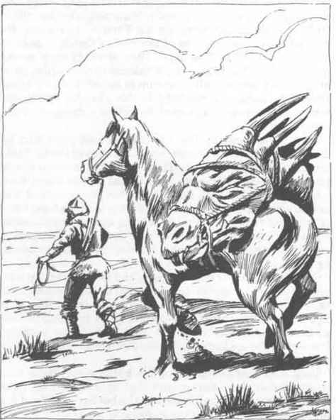

Tang the Horrific：紫鹰部族王子 · Tang the Horrific: Prince of the Clan
恐怖的唐 Tang the Horrific
部族王子——干燥草原
 |
|
Tang the Horrific 出生在干燥草原的一座圆顶帐篷里。他度过了普通的干燥草原童年，很早就学会骑马、射弓、狩猎和袭击邻近部落。
与其他游牧男孩不同，年轻的 Tang 坐立不安。他想看看奥斯其他地方的奇观，即使只是为了激励自己的人民向定居民族发动进攻并征服他们。他的父亲、部族的可汗给予儿子祝福，允许他在定居民族之间旅行。他给儿子一座单人圆顶帐篷和一峰双峰骆驼，还给了他一串强壮的游牧矮种马。
从那以后，Tang the Horrific（这个绰号是他最初遇到的文明人给他的）就在奥斯各地游荡，以佣兵为生。他仍然拒绝住在室内，只要可能就搭起自己的圆顶帐篷。他侍奉过许多主人，有善有恶。年轻的游牧人曾负责训练盾之地几位当地领主的骑兵，也曾在伊乌兹、大王国、灰鹰、弗尤伦迪和坦赫等地侍奉主人。当他“没有工作”时，就会和勇敢的冒险者队伍一起参加袭击。
目前 Tang 正处于两份工作之间，靠积蓄生活。他的圆顶帐篷搭在盾之地，很快就会有某位对轻骑兵现状不满的当地领主联系他，请他安排训练。在此期间，他用自己最喜欢的方式放松：骑着矮种马，练习射术和弯刀技艺，并学习新的林野知识。
Tang 精通刀、矛、手斧、弯刀、短弓、骑手连枷、带刺小盾、轻型骑枪、匕首和标枪。他掌握人民的野蛮技能：攀爬悬崖、在自然环境中隐藏、突袭、背后防护、跳跃与疾奔、侦测幻觉和魔法、领导、求生、急救、户外技艺、追踪、驯兽、骑术、远距离信号和圆顶帐篷建造。
他不喜欢魔法，也不使用魔法武器，因为他认为真正的塔尔可汗不应依赖这些东西。
尽管长期生活在文明人之间，Tang 仍然是个野蛮人，并且牢牢坚持自己人民的信条，尤其是仇杀传统。尽管他的阵营如此，如果他发誓与某人为敌，就会竭尽全力给对方带来灾祸。
Tang 是个身材矮小、双腿弯曲的男人，有圆而扁的脸、塌鼻子、夹杂灰发的黑发，以及黑色的斜眼。他几乎总在微笑；对任何他确认不邪恶、也不与 Iuz 或其邪恶盟友有关的人，他都非常友好。他拥有许多奥斯地图，经常仔细研究，试图找出一支干燥草原游牧人组成的野蛮军队，如何不用穿越中间大片敌对领土，就能前往 Iuz 的办法。他识字，并能流利地说几种语言。
他有一些野蛮人的怪癖和禁忌：除非在圆顶帐篷、帐篷或露天，否则他不会自愿睡觉；如果被迫在室内过夜，他会感到被困住，并经常做可怕的噩梦。他还有一项个人禁忌，禁止自己骑乘马或骆驼以外的任何东西。驴、象、车辆和其他交通方式都被他禁止。
Tang 离开 Iuz 时背负着巨大的阴影，并被对 Iuz 的疯狂憎恨吞噬。他已经向 Iuz 宣誓仇杀，会攻击自己看见的任何邪恶类人生物，因为他认为那是 Iuz 的代理人。如果有人问他最想做什么，他会连续数小时谈论自己的愿望：带领一大群本族人，并以荒原游牧人、虎狼游牧人的部族为盟友，把 Iuz 的整个王国夷为平地，杀死其中每一个生物。他反复研究地图；只要找到办法，就会回到故乡召集自己人民的野蛮大军，把 Iuz 彻底摧毁。
Tang 对 Iuz 的执着仇恨对他而言很不寻常，因为他通常友好而随和。他对 Iuz 的仇恨始于自己担任 Iuz 骑兵佣兵指挥官期间。Tang 鄙视“文明”人，因此并不太介意与 Iuz 的骑兵一起攻击定居民族。然而，当 Iuz 要他率部进攻荒原游牧人时，Tang 反叛了。荒原游牧人与他自己的人民太过相似，他无法逼自己屠杀那些与自己如此相像的人。Iuz 下令逮捕这个年轻游牧人，但 Tang 设法说服自己的骑兵部下杀死传令者，并带着骑兵叛逃到狼游牧人一方。
年轻游牧人拒绝被逮捕的无礼举动使 Iuz 暴怒。他一直没有停止寻找 Tang；如果 Tang 被带到 Iuz 面前，游牧人可以预期不会得到任何怜悯。Iuz 原本计划让 Tang 训练的骑兵去对付北方边境的游牧民族，而看到游牧人因为自己的部下得到强化，更令他怒不可遏。
Tang the Horrific 未婚，因为他不认为“文明”女孩适合与紫鹰部族的塔尔可汗相伴。他已经非常擅长修补自己的圆顶帐篷，也能酿造上好的库米斯（发酵奶）。他总是乐于见到游牧同胞，并会高兴地与他们彻夜交谈，讨论哪一种弓最好、马匹、或比较各自的狩猎方法。
Tang 是一名出色的将军，遵循游牧人的方式，习惯指挥各种类型的部队。Iuz 认为他构成威胁是正确的：如果 Tang 成功带领自己的人民组成的部族大军，与北方游牧人一起进攻 Iuz，那么几乎没有什么能抵挡他们，只有城市例外；而没有补给，城市将会挨饿。
上一节：Karll of Urnst：乌恩斯特公爵 · Karll of Urnst: Duke of Urnst
下一节：Timitrios Spartakos：大王国魔法使用者 · Timitrios Spartakos: Magic-User of the Great Kingdom